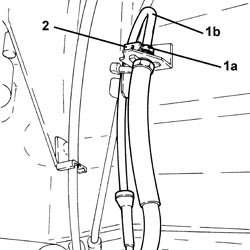
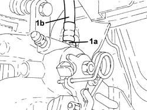
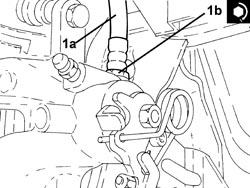
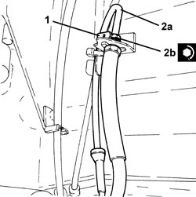

3340B30 HOSE TO L/H OR R/H REAR BRAKES (ONE) - R+R
- Path
- Procedures > 33 BRAKES > 3340 ANTI-LOCK BRAKING SYSTEM (ABS) > 3340B ABS SYSTEM PIPES > 3340B30 HOSE TO L/H OR R/H REAR BRAKES (ONE) - R+R
- Kind
- repair procedure (removal / refitting; the operation number is the code)
- Applies to
- all engines; all production periods
- Interactive page
- https://sloeber94.github.io/elrnDB-aBrrSpdr/en/#/946002146
Applies to: all engines; all production periods
 Removing
Removing
 Refitting
Refitting- Position the vehicle on a lift.
Op. 4450B06 LEFT REAR WHEEL - R.R
- Remove the protective cap from the bleed valve on the brake caliper.
- Connect the recovery device (pipe and reservoir) to the brake caliper bleed valve.
- Loosen the bleed valve on the brake caliper and wait until the brake-clutch reservoir and pipes drains.
1. Undo the connector (1a) and disconnect the rigid pipe from fitting to rear brake (1b), flexible pipe side.
2. Withdraw the hose retaining clip.

Applies to: all engines; all production periods
1. Undo the connector (1a) and remove the hose to the rear brake (1b).

Applies to: all engines; all production periods
Refitting
Removing1. Refit the flexible pipe to the rear brake (1a) and connect to the brake caliper by tightening fitting (1b) to the specified torque.
Component | Fastening | dia | Value (daNm) | Validity |
|---|---|---|---|---|
Brake pipe connectors | Connector | M10/M12 | 1.4 ÷ 1.8 |

Applies to: all engines; all production periods
1. Refit the hose retaining clip in its housing.
2. Connect the rigid pipe from the fitting to the rear brake (2a), hose side and tighten the connector (2b) to the recommended torque.
Component | Fastening | dia | Value (daNm) | Validity |
|---|---|---|---|---|
Brake pipe connectors | Connector | M10/M12 | 1.4 ÷ 1.8 |

Applies to: all engines; all production periods
Op. 0010T64 BRAKE AND/OR CLUTCH FLUID CHECK LEVEL AND TOP UP AS NECESSARY
Op. 0010T65 HYDRAULIC BRAKE SYSTEM - BLEED AIR
Op. 4450B06 LEFT REAR WHEEL - R.R
- Remove the vehicle from the lift.
Topics linked from this page (3)
- 0010T64 BRAKE AND/OR CLUTCH FLUID CHECK LEVEL AND TOP UP AS NECESSARY
- 0010T65 HYDRAULIC BRAKE SYSTEM - BLEED AIR
- 4450B06 LEFT REAR WHEEL - R.R